本章主题围绕常见的拓扑性质: 分离性、可数性、紧致性、度量化和连通性.
试试拓扑性质在线速查: 在 pi-base 的搜索框输入 "first countable + hausdorff + ~locally compact"
分离公理都是关于两个点 (或闭集) 能否用邻域来分隔的性质, 是对拓扑空间的附加要求.
以上三条公理中的邻域换成开邻域也是等价的. `T_2` 公理是最重要、最常用的分离公理. 显然 `T_2 rArr T_1 rArr T_0`.
`(RR, T_f)` 是 `T_1` 空间, 但不是 `T_2` 的. 因为 `x != y` 时, `RR\\{y}` 就是 `x` 的不含 `y` 的邻域. 但 `x, y` 的邻域都是有限集的余集, 因此一定相交.
`T_1` 公理 `iff` 任意有限子集是闭集.
`T_1` 聚点聚无穷 `T_1` 空间中, 子集 `A` 的聚点的任一邻域与 `A` 的交集是无穷集.
反设聚点 `x` 有邻域 `U` 使得 `U nn A` 有限, 不妨设 `U` 是开集. 记 `B = (U nn A) \\ {x}`, 它是有限集, 因此是闭集. 因此 `U\\B = U\\A uu {x}` 仍是 `x` 的开邻域, 它与 `A\\{x}` 的交为空. 这与 `x in A'` 矛盾.
`T_2` 空间序列极限的唯一性 Hausdorff 空间中, 一个序列不会收敛到两个以上的点.
设 `{x_n}` 收敛到 `x`. 又设 `y != x`, 要证 `x_n` 不会收敛到 `y`. 我们取 `x, y` 的不相交邻域 `U, V`. 因为 `x_n to x`, 所以 `{x_n}` 除有限项外全部含于 `U`, 这样 `V` 中只有 `{x_n}` 的至多有限项, 不可能有 `x_n to y`.
拓扑学需要秦始皇 关于 `T_3` 到 `T_6` 的定义, 诸多材料并不统一. 我们以 pi-base 这个网站的定义为准.
为什么需要 `T_1` 公理 在 `T_3` 到 `T_6` 的定义中, 我们要求 `T_1` 公理成立. 此时单点集是闭集, 有 `T_4 rArr T_3 rArr T_2`. 但 `T_1` 不成立时, 正规 `⇏` 正则, 例如拓扑空间 `(RR, tau)`, 其中 `tau = {(-oo, a)| -oo le a le +oo}`. 该空间正规, 但不正则, 亦不满足 `T_1`, `T_2` 公理.
完美正规 `rArr` 完全正规 `rArr` 正规.
先证完美正规 `rArr` 正规: 设 `A, B` 是 `X` 的不相交闭集, 在 `RR` 中取 `0` 和 `1` 的不相交邻域 `U_0, U_1`, 则 `f^-1(U_0)`, `f^-1(U_1)` 是 `A, B` 的不相交邻域. 🚧
综上有: `T_6 rArr T_5 rArr T_4 rArr T_3 rArr T_2 rArr T_1 rArr T_0`.
喜报: 度量空间具有最好的分离性 度量空间满足 `T_6` 公理.
递减邻域基 如果 `x` 点存在可数邻域基, 则该点处存在一列递减的邻域基 `V_1 supe V_2 cdots`.
设 `{U_n}` 是 `x` 点的邻域基. 作 `V_n := nnn_(k=1)^n U_k`, 则任意 `U_n` 中都包含 `V_n`, 所以 `{V_n}` 即为所求的递减邻域基.
`C_1` 空间对点列十分友好, 从以下定理可以看出:
`C_1` 空间中的聚点原理 设 `X` 第一可数, `A sube X`, 则 `x in bar A iff x` 是 `A` 的极限点.
"`lArr`" 在一般的拓扑空间中成立, 已在第一章中证明. 下证 "`rArr`":
由引理知存在 `x` 处的递减邻域基 `{U_n}`.
因为 `x in bar A`, 所以对任意 `U_n`, 都存在 `x_n in A nn U_n`.
由选择公理选出点列 `{x_n}`, 下证 `x_n to x`.
事实上, 对 `x` 的任意邻域 `U`, 存在 `N` 使得 `x_N in U_N sube U`.
又 `{U_n}` 递减, 对任意 `n ge N` 都有 `x_n in U_N sube U`.
这说明 `x_n to x`.
`C_1` 空间中的 Heine 定理 设 `X` 第一可数, 则 `f: X to Y` 在 `x` 处连续 `iff` 对任意 `x_n to x` 都有 `f(x_n) to f(x)`.
"`rArr`" 在一般的拓扑空间中成立.
事实上任取 `f(x)` 的邻域 `V`, 则 `U = f^-1(V)` 是 `x` 的邻域, 它包含了 `{x_n}` 的尾部.
于是 `V` 包含了 `{f(x_n)}` 的尾部.
下证 "`lArr`": 任取 `f(x)` 的邻域 `V`, 下证原像 `f^-1(V)` 是 `x` 的邻域.
如若不然, 则 `x` 不是 `f^-1(V)` 的内点, `x in (f^-1(V)^@)^c = bar(f^-1(V)^c)`.
由聚点原理, 存在 `f^-1(V)^c` 中点列 `x_n to x`, 因此 `f(x_n) to f(x)`.
但 `x_n in f^-1(V)^c`, 所以 `f(x_n) !in V`, 这与 `f(x_n) to f(x)` 矛盾.
若 `X` 是 `C_1` 空间, 且任意点列的极限具有唯一性, 则 `X` 是 Hausdorff 空间.
如果 `X` 不是 Hausdorff 空间, 则存在两点 `x != y`, 它们的所有邻域都相交. 取 `x, y` 处的递减邻域基 `{U_n}` 和 `{V_n}`, 则任意 `n`, `U_n nn V_n != O/`. 由选择公理可以确定点列 `x_n in U_n nn V_n`, 它同时趋于 `x` 和 `y`, 从而矛盾.
欧氏空间 `RR^n` 是可分度量空间, 因此它第二可数, 拓扑基为 `{B(x, 1//n): x in QQ^n, n in ZZ^+}`.
`C_2` 空间的任一拓扑基都有一个可数子集构成一个拓扑基.
`C_1` 空间的任一邻域基是否都有一个可数子集构成邻域基呢?
本节将看到数学分析中的许多熟悉结论在拓扑空间中的推广. 数学分析中, 实数集 `RR` 作为拓扑空间具有许多优良性质, 然而, 在拓扑空间中这些性质的成立是有条件的.
紧致性 (紧性, compactness) 设 `A` 是拓扑空间 `X` 的子集. `A` (在 `X` 中) 的一个开覆盖是指一族开集 `{O_lambda}`, 满足 `A sube uuu_(lambda in Lambda) O_lambda`. 如果 `A` 的任意一个开覆盖 `{O_lambda}` 都存在有限子覆盖, 即 存在 `O_1, cdots O_n in {O_lambda}` 使得 `A sube uuu_(k=1)^n O_k`, 则称 `A` 在 `X` 中是紧致 (紧, compact) 的, `A` 是 `X` 中的紧集. 特别当 `X` 自身紧的时候, 称它为紧致拓扑空间.
注意开集的有限交仍是开集, 这就是有限覆盖中 "有限" 的用武之地.
有限个紧集的并是紧的. 特别, 任意有限点集是紧的.
注意, 有限点集不一定是闭的, 需要满足 `T_1` 公理才行.
紧集的闭子集是紧的.
假设 `A` 紧, `B` 是闭集且 `B sube A`.
若 `B` 为空集, 显然它是紧的.
下设 `B != O/`, 对 `B` 的任意开覆盖 `cc O`, 向其中加入一个开集 `B^c`, 就得到
`A` 的开覆盖, 后者存在有限子覆盖 `{O_k}_(k=1)^n`.
由于 `B != O/`, 这个有限子覆盖中至少含有一个不同于 `B^c` 的开集,
从中排除掉开集 `B^c`, 所得的开集族仍然是不空的, 于是得到 `cc O` 的有限子覆盖.
紧集的连续像是紧的.
用定义验证. 注意开集的连续原像仍是开集.
紧集套定理 设 `{K_n}` 为 `X` 中的一列非空闭集, 且 `K_1` 紧致, 且满足 `K_1 supe K_2 supe cdots`. 则 `nnn_(n ge 1) K_n != O/`.
反设它们的交集为空, 则 `{K_n^c}_(n ge 2)` 构成 `K_1` 的开覆盖. 由 `K_1` 的紧性, 它们当中的有限个已经把 `K_1` 盖住. 设其中下标最大的一个是 `K_n^c`. 由嵌套关系知 `K_n^c` 是这有限个开集中最大的一个, 所以 `K_1 sube K_n^c`, 即 `K_1 nn K_n = O/`. 这与已知条件 `K_1`, `K_n` 均不空矛盾.
Hausdorff 空间中紧集必为闭集. 因此, 紧 Hausdorff 空间中的闭集等价于紧集.
设 `X` 是 Hausdorff 空间, `A` 是其中的紧集. 下证 `A^c` 是开集, 为此任取 `y in A^c`, 我们来证明存在 `y` 的邻域 `V` 使得 `y in V sube A^c`. 对任意 `x in A`, 由 `T_2` 公理知存在 `x`, `y` 的不相交邻域 `U_x`, `V_x`. 于是 `{U_x: x in A}` 构成 `A` 的开覆盖, 由 `A` 的紧性知道存在有限子覆盖 `A sube uuu_(k=1)^n U_k`. 考虑对应的集合 `V_k`, 令 `V := nnn_(k=1)^n V_k`. 因为 `AA k, U_k nn V_k = O/`, 所以 `V nn (uuu_(k=1)^n U_k)` `= uuu_(k=1)^n (U_k nn V)` `= O/`, 从而 `V nn A = O/`. 这就是说 `y in V sube A^c`.
证明同胚映射的常用小结论:
设 `f: X to Y` 是连续双射, 且 `X` 紧, `Y` Hausdorff, 则 `f` 是同胚.
例如, 将闭区间 `[0, 1]` 的端点视作同一点, 则下面的映射是同胚:
`f: [0, 1] // ~ to S^1`
`x mapsto exp(2 pi "i" x)`.
只需证 `f^-1` 也连续. 根据第一章的命题, 这等价于证明 `f` 是闭映射: 设 `C sube X` 为闭集, 它作为 `X` 的闭子集是紧的. 而紧集的连续像 `f(C)` 仍紧. 再由 `Y` 是 Hausdorff 空间, 推知 `f(C)` 是闭集.
任意无穷多个紧致空间的乘积也是紧致的, 这个结论也叫做 Tychonoff 定理. 事实上无穷多个拓扑空间的积拓扑称为 Tychonoff 拓扑.
本节的主要目标是证明度量空间中, 紧性的几个等价命题, 即: 紧 `iff` 自列紧 `iff` 极限点紧.
`C_1` 空间的子列极限 设 `X` 第一可数, 则 `x` 是点列 `{x_n}` 的某个子列的极限 `iff x` 的任意邻域含有 `{x_n}` 的无穷多项. 如果 `X` 还满足 `T_1` 公理, 则上式等价于 `x` 是 `{x_n}` 的聚点.
`C_1` 空间中, 紧 `rArr` 自列紧.
设 `A` 是紧集, `{x_n}` 是 `A` 中的任意点列. 反设结论不成立, 则对任意 `x in A`, `{x_n}` 都没有子列收敛于 `x`, 由引理知存在 `x` 的开邻域 `U_x` 只含 `{x_n}` 的有限项. 于是 `{U_x: x in A}` 构成 `A` 的开覆盖, 由于 `A` 的紧性, 存在有限子覆盖 `A sube uuu_(k=1)^n U_k`. 由假设, `{x_n}` 只有有限项包含于上式右边, 与 `{x_n} sube A` 矛盾.
`C_1 + T_1` 空间中, 自列紧 `iff` 极限点紧.
自列紧到紧的证明不太容易, 需要用到两个经典引理.
Lebesgue 数 设 `A` 是度量空间中的自列紧集, 则对 `A` 的任意开覆盖 `cc O`, 存在实数 `delta gt 0`, 使得 `A` 中每个点的 `delta` 邻域都被 `cc O` 中的某个开集盖住. 换言之, `AA x in A`, `EE O_x in cc O`, `B(x, delta) sube O_x`. `delta` 由 `A` 和 `cc O` 共同决定, 称为开覆盖 `cc O` 的 Lebesgue 数.
反设结论不成立, 则存在一个 `A` 的开覆盖 `cc O`, 它没有 Lebesgue 数. 取数列 `delta_n := 1//n`, 由选择公理, 存在相应的 `x_n in A`, 满足 `AA O_lambda in cc O`, `B(x_n, delta_n) ⊈ O_lambda`. 因为 `A` 自列紧, 设 `{x_n}` 有子列 `{x_(n_k)}` 收敛于点 `x in A`. 设 `x` 被 `cc O` 中的一个开集 `O_x` 覆盖. 于是存在开球 `B(x, epsi) sube O_x`. 由子列收敛性, 存在 `K in NN`, 对任意 `k gt K` 有 `x_(n_k) in B(x, epsi//2)`. 我们不妨把 `K` 取得更大一点, 使 `delta_(n_k) = 1//n_k lt epsi//2`, 从而 `B(x_(n_k), delta_(n_k))` `sube B(x_(n_k), epsi//2)` `sube B(x, epsi)` `sube O_x`. 与假设 `B(x_(n_k), delta_(n_k)) ⊈ O_x` 矛盾.
记 `cc O` 的 Lebesgue 数为 `L(cc O)`. 则 `L(cc O) = min_(x in X) Sup_(U in cc O) d(x, U^c)`.
有限 `epsi` 网 设 `A` 是度量空间的列紧集, 则对任意实数 `epsi gt 0`, 存在有限个开球 `{B(x_k, epsi)}_(k=1)^n` 将 `A` 覆盖, 称为 `A` 的一个有限 `epsi` 网.
反设对于某个 `epsi gt 0`, 不存在 `A` 的有限 `epsi` 网. 显然 `A` 非空, 取 `x_1 in A`. 由于不存在 `A` 的有限 `epsi` 网, 又可取 `x_2 in A - B(x_1, epsi)`... 如此得到点列 `{x_n}`. 由于 `{x_n}` 的项两两距离大于 `epsi`, 不可能存在收敛子列, 与 `A` 的列紧性矛盾.
度量空间中, 自列紧 `rArr` 紧.
设 `A` 是列紧集, 对 `A` 的任意开覆盖 `cc O`, 设 `delta` 是它的 Lebesgue 数. 于是 `A` 存在有限 `delta`-网, 即存在有限个开球使得 `A sube uuu_(k=1)^n B(x_k, delta)`. 由 Lebesgue 数定义, 这些开球都被 `cc O` 中的某个开集盖住, 记作 `B(x_k, delta) sube O_k`. 从而 `{O_k}_(k=1)^n` 是 `cc O` 的有限子覆盖.
度量空间中, `A` 紧 `rArr A` 是有界闭集.
度量空间中有界闭集不一定紧. 无限集上的离散度量空间就是一例: 整个空间是有界闭的, 每个单点集 `{x}` 构成开覆盖, 但没有有限子覆盖. 更多反例 ›
`n` 维欧氏空间 `bbb E^n` 中, `A` 紧 `iff A` 是有界闭集.
度量空间中, `A` 紧致当且仅当任意 `A to RR` 的连续函数有界.
紧致性虽然是很好的拓扑性质, 但它太强了, 欧氏空间 `bbb E^n` 都不是紧致的. 下面的定义是紧致性的一些弱化版本.
Hausdorff 空间的不相交紧集能被开集分离 推论: 紧 Hausdorff `rArr T_4`.
[知乎@sumeragi693]
设 `X` 为 Hausdorff 空间, `A, B` 是不相交紧集.
要证明存在不相交开集 `U supe A`, `V supe B`.
对任意 `x in A` 和 `y in B`, 存在不相交的开邻域 `x in U_(x, y)`, `y in V_(x, y)`.
对每个固定的 `x`, `{ V_(x, y): y in B }`
构成 `B` 的开覆盖, 因此它们中的有限个 `{ V_(x, y_i) }_(j=1)^n`
已经覆盖了 `B`. 记
`V_x := uuu_(j=1)^n V_(x, y_j)`,
`quad U_x := nnn_(j=1)^n U_(x, y_j)`,
则 `V_x` 是 `B` 的开邻域, `U_x` 是 `x` 的开邻域 (因为每个 `U_(x, y_j)` 是 `x` 的开邻域).
再让 `x` 取遍 `A` 的每一点, `{ U_x: x in A }` 构成 `A` 的开覆盖, 设它们中的有限个
`{ U_(x_i) }_(i=1)^m` 已经覆盖了 `A`. 记
`U := uuu_(i=1)^m U_(x_i)`,
`quad V := nnn_(i=1)^m V_(x_i)`,
则 `U` 是 `A` 的开邻域, `V` 是 `B` 的开邻域 (因为每个 `V_x` 是 `B` 的开邻域).
下证 `U nn V = O/`. 先对固定的 `x`,
`U_x nn V_x`
`sube uuu_(i=1)^n U_(x, y_i) nn V_(x, y_i)`
`= O/`.
于是
`U nn V`
`sube uuu_(i=1)^m U_(x_i) nn V_(x_i)`
`= O/`.
局部紧 Hausdorff `rArr T_3`.
类似于紧空间的性质: Lindelöf 空间的闭子集也是 Lindelöf 的.
我们证明了, 对于度量空间 `C_2 iff "可分" iff "Lindelöf"`. 事实上在度量空间中, 可分性和 Lindelöf 性可以遗传至子空间. 这是因为度量空间的子空间仍是度量空间, 且 `C_2` 具有遗传性. 一般拓扑空间中, 可分性是开遗传的, Lindelöf 性是闭遗传的.
列紧 Lindelöf 空间是紧的.
[知乎@sumeragi693] 设 `X` 是自列紧 Lindelöf 空间, 若 `X` 不紧, 则存在一个可数开覆盖 `{U_n}`, 其没有有限的子覆盖. 对任意正整数 `n`, `uuu_(i=1)^n U_i` 不能把 `X` 盖住, 故存在 `x_n in X - uuu_(i=1)^n U_i`. 由列紧性, 点列 `{x_n}` 有一个收敛子列 `x_(n_k) to x`. 但 `{U_n}` 是可数开覆盖, 故 `EE m` 使得 `x in U_m`. 由收敛性的定义, `x` 的开邻域 `U_m` 含有 `{x_n}` 中的无穷多项, 特别地, 存在 `n gt m` 使得 `x_n in U_m`, 与 `x_n` 的取法矛盾.
注意, 我们没有证明 Lindelöf 空间中的自列紧集是紧的, 因为 Lindelöf 缺乏遗传性.
`C_2` 空间是列紧的, 当且仅当它是紧的. 这是因为 `C_2 rArr C_1`, 给出命题的 `lArr` 部分, `C_2 rArr` Lindelöf, 给出 `rArr` 部分.
Tychonoff 定理 `"Lindelöf" and T_3 rArr T_4`.
[知乎@sumeragi693] 任取 `X` 中两个不相交闭集 `A, B`, 对 `AA x in A`, `B^c` 是它的开邻域. 由 `X` 的正则性知道 `EE` `x` 的开邻域 `U_x`, 满足 `bar U_x sube B^c`. 因此 `{U_x: x in A}` 是 `A` 的一个开覆盖. 根据 Lindelöf 性质闭遗传, `A` 也是 Lindelöf 的, 故存在上述开覆盖的可数子覆盖, 记作 `A sube uuu_(n ge 1) U_n`. 类似地, 存在 `B` 的可数开覆盖 `B sube uuu_(n ge 1) V_n`, 其中 `bar V_n sube A^c`. 构造开集列 `A_n, B_n` 如下 `A_n := U_n - uuu_(i=1)^n bar V_i`, `quad B_n := V_n - uuu_(i=1)^n bar U_i`. 对任意 `x in A`, `EE n` 使得 `x in A_n`, 故 `A sube uuu_(n ge 1) A_n`, 类似 `B sube uuu_(n ge 1) B_n`. 我们得到了 `A, B` 的两个开邻域, 下证 `uuu_(n ge 1) A_n` 与 `uuu_(n ge 1) B_n` 不相交. 事实上若它们的交不空, 则存在正整数 `m, n` 使得 `A_m nn B_n != O/`. 若 `m ge n`, 这意味着存在一点 `x`, `x in A_m = U_m - bar V_1 - bar V_2 cdots - bar V_m`, 从而 `x !in bar V_n`. 这与 `x in B_n sube bar V_n` 矛盾. 同理 `m le n` 时也推出矛盾.
本节讨论在什么条件下可以在拓扑空间中规定度量, 使它成为度量空间. 我们将遇到一些深刻的定理.
Urysohn 度量化定理 `C_2 and T_3 rArr` 可度量化.
度量空间具有最好的分离性, 因此定理表明 `C_2 + T_3` 足以推出 `T_0` 至 `T_6` 的全部分离公理.
[张恭庆《泛函分析讲义》, 知乎@Gigil]
粗略地说, 第一纲集是 "小的", 第二纲集是 "大的". 纲与基数、Lebesgue 测度等概念从不同角度刻画集合的 "大小".
从稠密集的定义知道, `E` 在 `X` 中稠密 `iff E^c` 没有内点. 因此, `E` 是稀疏闭集 `iff E^c` 是稠密开集.
只证两个稀疏集的并仍稀疏: 设 `A, B` 是稀疏集,
我们考查集合 `bar(A uu B) = bar A uu bar B` 是否存在内点.
若存在非空开集 `U sube bar A uu bar B`, 由于 `A` 稀疏, 有 `U !sube bar A`,
即 `V := U nn (bar A)^c != O/`.
任取 `x in V`, 易知 `x in U sube bar A uu bar B` 及 `x !in bar A`, 这推出 `x in bar B`,
于是 `V sube bar B`.
但 `V` 是非空开集, 这与 `B` 是稀疏集矛盾.
因此 `bar(A uu B)` 是稀疏集.
度量空间中, `E` 是稀疏集的充要条件是: 对任意开球 `B_0`, 存在开球 `B_1 sube B_0` 使得 `bar E nn bar B_1 = O/`.
局部紧 Hausdorff 空间中, 设 `U` 为非空开集, 则存在非空开集 `V`, 使得 `bar V sube U` 且 `bar V` 紧.
| `(RR, tau_f)` | `(RR, tau_c)` | `RR_l` | `RR_l^2` | 度量空间 | 欧氏空间 `RR^n` | 球面 `S^n` | |
|---|---|---|---|---|---|---|---|
| `T_1` | ✓ | ✓ | ✓ | ✓ | ✓ | ✓ | |
| `T_2` | × | ✓ | ✓ | ✓ | ✓ | ✓ | |
| `T_3` | × | ✓ | ✓ | ✓ | ✓ | ✓ | |
| `T_4` | × | ✓ | × | ✓ | ✓ | ✓ | |
| `C_1` | × | ✓ | ✓ | ✓ | ✓ | ✓ | |
| `C_2` | × | × | ✓ | × | ✓ | ✓ | |
| 可分 | ✓ | ✓ | × | ✓ | ✓ | ||
| 紧致 | ✓ | × | × | × | × | × | ✓ |
| Lindelöf | ✓ | × | × | ✓ | ✓ | ||
| 连通 | × | × | ✓ | ✓ | |||
| 道路连通 | × | × | ✓ | ✓ |
[参考 知乎@ZCC]
| 遗传性 | 可乘性 | 映射 | 加细 | |
|---|---|---|---|---|
| `T_0`, `T_1`, `T_2` | ✓ | 任意 | 双射开 | ✓ |
| 正则 | ✓ | 有限 | 同胚 | |
| 正规 | 闭遗传 | × | 同胚 | |
| `T_3`, `T_4` | ✓ | 有限 | 同胚 | |
| `C_1`, `C_2` | ✓ | 可数 | 连续开 | |
| 可分 | 开遗传 | 可数 | 连续 | |
| 紧致 | 闭遗传 | 任意 | 连续 | |
| Lindelöf | 闭遗传 | × [注1] | 连续 | |
| 连通 | × | 有限 | 连续 | |
| 道路连通 | × | 有限 | 连续 |
